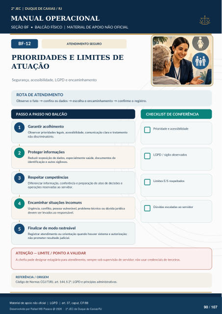

ATENDIMENTO SEGURO
PRIORIDADES E LIMITES DE
ATUAÇÃO
Segurança, acessibilidade, LGPD e encaminhamento
ROTA DE ATENDIMENTO
Observe o fato → confira os dados → escolha o encaminhamento → confirme o registro.
PASSO A PASSO NO BALCÃO
CHECKLIST DE CONFERÊNCIA
Garantir acolhimento
Observar prioridades legais, acessibilidade, comunicação clara e tratamento não discriminatório.
Proteger informações
Reduzir exposição de dados, especialmente saúde, documentos de identificação e autos sigilosos.
Respeitar competências
Diferenciar informação, conferência e preparação de atos de decisões e operações reservadas ao servidor.
Encaminhar situações incomuns
Urgência, conflito, pessoa vulnerável, problema técnico ou dúvida jurídica devem ser levados ao responsável.
Finalizar de modo rastreável
Registrar atendimento ou orientação quando houver sistema e autorização; não prometer resultado judicial. Prioridade e acessibilidade LGPD / sigilo observados Limites E/S respeitados Dúvidas escaladas ao servidor
ATENÇÃO — LIMITE / PONTO A VALIDAR
A chefia pode designar estagiário para atendimento, sempre sob supervisão de servidor; não usar credenciais de terceiros.
REFERÊNCIA / ORIGEM
Código de Normas CGJ/TJRJ, art. 144, § 2º; LGPD e princípios administrativos.
Ver também o infográfico original (página 90)
